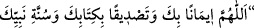

kere salevât getirirse asla fakir olmaz.”[308]
Ezhâru’l-ehâdîs’de şöyle rivâyet edilmiştir: Hak Teâlâ, cuma günü ve gecesi
Âlemlerin Efendisi’ne mü’minlerin gönderdiği salevâtı yazmaları için mukarreb
meleklerden bazısını gümüş sayfalar ve altından kalemlerle perşembe günleri arş-ı
mecîd’den (dokuzuncu felek)ten yeryüzünün merkezine gönderir.
Cuma günleri Hz. Muhammed için okunan salevât,
Diğer günlerdekinden daha değerlidir.
Cuma gününün Hz. Peygamber’e mahsus olması sebebiyle
O günde getirilen salevâtın sevâbının haddi hesabı yoktur.
Büyüklerden birisinden şöyle rivâyet edilmiştir: Cuma gecesi Hz. Peygamber (s.a.)’e
üç bin salevât getiren rüyâsında o yüce zâtı görür. Bunu Ali Safiy, Reşahât’da
zikretmiştir.
17- Bir vâsıtaya binerken de salevât getirilmelidir. Her yolculukta binite
oturulacağında;
(Allâh’ın adıyla, Allah en büyüktür. Allahım beşerin en hayırlısı olan Muhammed’e
salât eyle.)” demeli, sonra da şu âyeti okumalıdır:
(Bunu bizim hizmetimize vereni tesbih ve takdis ederiz, yoksa biz buna güç
yetiremezdik. Biz şüphesiz Rabbimize döneceğiz.)” (ez-Zuhruf, 43/13-14).
18- Mekke yolunda da salevât getirilmelidir. Yâni Kâbe Haremi yolunda olan kimse
yükseğe çıkacak olsa tekbir getirmeli, aşağıya inecek olursa da salevât göndermelidir.
19- Kişi Haceru’l-esved’i istilâm ederken;
(Allâh’ım sana îman ederek, Kitab’ını ve Peygamberi’nin (s.a.) sünnetini tasdik
ederek (tavafa başlıyorum.)” demeli, sonra da Hz. Peygamber (s.a.)’e salevât
getirmelidir.
20- Safa ve Merve tepelerinde salevât getirilmelidir.
21- Telbiyeyi bitirdikten sonra salevât getirilmelidir.
22- Meş‘ar-i Harâm’da (Müzdelife) vakfe zamanında salevât getirilmelidir.
23- Medîne yolunda salevât getirilmelidir.
24- Medîne görününce salevât getirilmelidir.